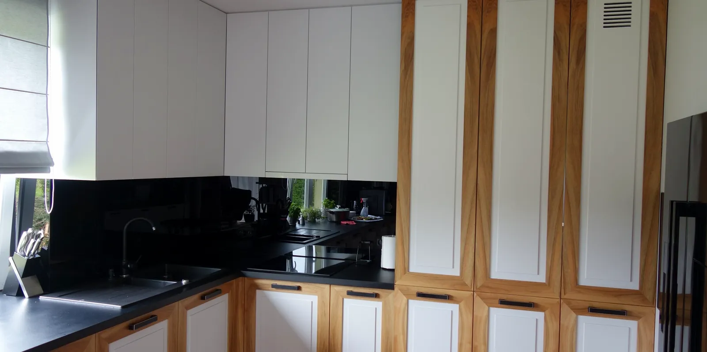
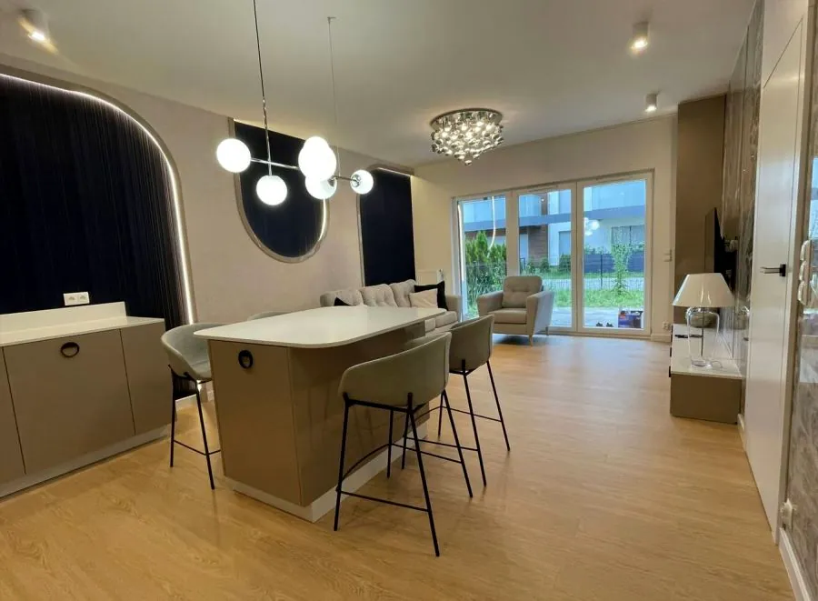
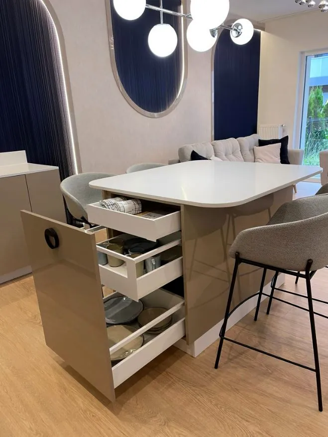

Kuchnie na wymiar
Kuchnię projektujemy pod konkretne pomieszczenie: od klasycznych frontów ramowych w drewnie, przez białe zabudowy z wyspą, po nowoczesne wyspy w okładzinie o fakturze kamienia. Łączymy płytę i drewno z blatami z kamienia, szkłem i stalą.
Zobacz realizacje (19)